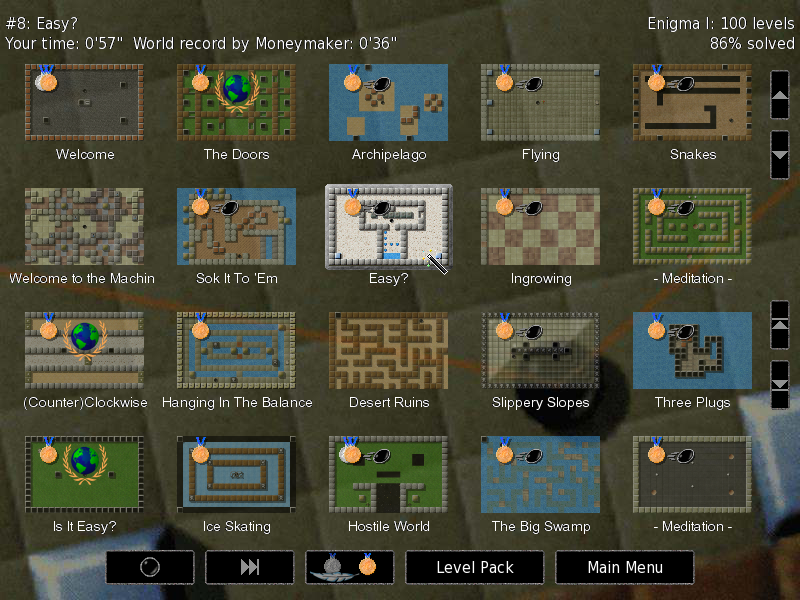
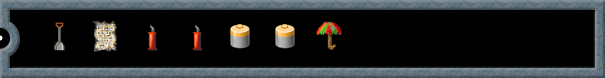

Данное Руководство описывает процесс установки и игры в Enigma. Оно соответствует версии Enigma под номером 1.20.
Copyright © 2003, 2004, 2005, 2006, 2007, 2008, 2009, 2010, 2011, 2012, 2013 Daniel Heck (dheck@gmx.de) и другие участники
Копирование и распространение этого файла с изменениями или без разрешено любым способом без отчислений, если сохранены уведомление об авторских правах и это уведомление.
| 1. Введение | Знакомство с Enigma | |
| 2. Игра | Как играть в Enigma | |
| 3. Некоторые игровые объекты | Описание некоторых игровых объектов | |
| 4. Дополнительные темы | Дополнительные возможности и администрирование | |
| 5. Подсказки | Подсказки для некоторых сложных уровней | |
| 6. Благодарности | Создатели и благодарности | |
| 1.1 Об Enigma | Некоторые факты об Enigma | |
| 1.2 Установка | Получение и установка Enigma | |
| 1.3 Распространение Enigma | Передавайте копии вашим друзьям! |
Сказать, что Enigma — это игра-головоломка, будет преуменьшением. На самом деле Enigma — это огромная коллекция головоломок, и каждый из ее 550 уникальных уровней снова и снова потребует сообразительности, ловкости и подлинной силы воли от своих игроков. Enigma проста в изучении, интересна в игре и сложна в овладении. Она будет интересна пользователям почти любого возраста. Она содержит сотни уровней. К тому же она абсолютно бесплатна. Если вам нравятся игры-головоломки и у вас твердая рука, Enigma займёт вас на протяжении многих часов.
Цель игры — найти и открыть пары камней-оксидов одинакового цвета. Просто? Да. Легко? Конечно, нет! Прямой путь к камням-оксидам часто перекрывают скрытые ловушки, огромные лабиринты, лазерные лучи и, главное, бесчисленные заковыристые головоломки. Игровые объекты Enigma (а их здесь сотни, чтобы вы не скучали) взаимодействуют многочисленными непредсказуемыми способами, и поскольку многие из них подчиняются законам физики (а точнее, особым законам физики Enigma), управление ими с помощью мыши не всегда тривиально...
Первоначальная цель проекта Enigma была сохранить дух серии игр Oxyd, после того как их издатель решил покинуть игровой бизнес в 2002 году. У поклонников этой знаменитой игры будет чувство дежа вю. Но, спустя годы, Enigma впитала идеи из множества других популярных игр и добавила свои уникальные особенности к каждой из них.
Enigma доступна для Windows, Mac OS X и большинства разновидностей Linux и других современных Unix’ов. Она переведена на многие языки. Даже это руководство доступно на нескольких языках.
Существует официальная домашняя страница Enigma, которая содержит страницы снимков экрана, загрузок, последних новостей и самую последнюю версию данного Руководства. С разработчиками Enigma всегда можно связаться с помощью электронной почты по адресу enigma-devel@nongnu.org.
Enigma — это свободное программное обеспечение, другими словами, вы можете копировать её и давать её вашим друзьям (см. раздел Распространение Enigma) либо давать им ссылку на нашу страницу загрузки. Enigma разрабатывается маленькой группой добровольцев, все из которых работают в своё свободное время. Если вам понравилась игра, пришлите нам электронное письмо. Это, наверное, наша единственная награда за бесчисленные часы, которые мы посвящаем разработке игры.
Последнюю версию игры можно загрузить со страницы загрузок Enigma. Эта страница содержит пакеты для следующих операционных систем:
Версия Enigma для Windows распространяется как самораспаковывающаяся программа. Просто скачайте и запустите предложенный файл ‘.exe’.
Существуют бинарные пакеты для некоторых популярных дистрибутивов Linux, таких как SUSE, Redhat или Debian. Для других Unix-подобных операционных систем обычно самое простое решение — это сборка Enigma из исходных кодов.
Для операционной системы версии X установка не требуется, просто запустите файл ‘.dmg’ или ‘.tar.gz’.
На странице загрузок приводится наиболее подробная и актуальная информация. Если Enigma не работает на вашем компьютере, вы можете попросить помощи в рассылке Enigma (enigma-devel@nongnu.org).
Enigma — это свободное программное обеспечение, которое может распространяться на условиях GNU General Public License (GPL). Эта лицензия поставляется с каждым изданием Enigma (в файле ‘COPYING’ или ‘COPYING.txt’). Если вы хотите только играть в Enigma, вам не обязательно вникать в эти юридические тонкости (скорее всего, вы и не будете). Можете считать, что для вас лицензия гласит: играйте в Enigma сколько хотите, пока хотите и давайте её своим друзьям!
Если вы хотите изменить Enigma или участвовать в её дальнейшей разработке, пожалуйста прочтите лицензию хотя бы раз. Лицензия GPL гарантирует, что Enigma будет оставаться свободным программным обеспечением в будущем. В частности, если вы изменяете Enigma или распространяете изменённую версию, вы не можете отнять ни у кого другого право использовать, изменять и распространять Enigma или производные от неё.
Предыдущие два абзаца не заменяют настоящую лицензию, но дают представление о ней в общих чертах на простом русском. Пожалуйста, обратитесь к GPL, если у вас возникли вопросы или вам нужно знать больше подробностей.
| 2.1 Знакомство | Передвижение по меню и начало игры | |
| 2.2 Правила игры | Как играть в Enigma | |
| 2.3 Управление | Команды клавиатуры и мыши |
После запуска Enigma вы окажетесь в главном меню, откуда можно начать новую игру, установить некоторые параметры или выйти из игры, если вам надоело в неё играть. Следующие разделы познакомят вас с меню уровней и меню настроек; все остальное, надеемся, не требует объяснений. Многие меню предоставляют интерактивную помощь; просто нажмите клавишу <F1>.
| 2.1.1 Меню уровней | Выбор следующего уровня | |
| 2.1.2 Меню пакетов уровней | Выбор пакета уровней | |
| 2.1.3 Настройки | Приспособьте Enigma под свои предпочтения | |
| 2.1.4 Инспектор уровня | Подробная информация об уровне |
При нажатии кнопки "Начать игру" в главном меню осуществляется переход к меню уровней, которое выглядит примерно так:
Экран состоит из трех областей: верхняя область содержит информацию о выбранном в данный момент уровне и текущем пакете уровней, средняя область показывает обзор доступных уровней, а внизу находится ряд кнопок.
По списку уровней можно передвигаться с помощью маленьких кнопок со стрелками справа или используя клавиши со стрелками. Для начала новой игры просто щёлкните по изображению местности, на которой хотите играть, или нажмите <Enter>.
В Enigma есть два уровня сложности: "простой" и "нормальный". Чтобы переключиться между простой и нормальной сложностью, нажмите кнопку в центре ряда кнопок: переключитесь на значок с изображением серебряной медали и пера, если вы предпочитаете уровни полегче, или с изображением золотой медали для нормального, более сложного, режима игры.
В простом режиме доступны не все уровни, поэтому доступные уровни обозначены пером (если вы ещё их не решили) или серебряной медалью в верхнем левом углу их изображения.
Перейти к следующему уровню можно, нажав клавишу <F5> или кнопку <>>|> в нижнем ряду. Значение слова "следующий" в предыдущем предложении зависит от режима, выбранного с помощью левой кнопки в нижнем ряду:
Уровень может дополнительно обозначаться маленьким красным треугольником с восклицательным знаком в верхнем левом углу. Этот значок информирует о том, что уровень был обновлён после того, как вы его решили. Такой значок может появиться, если вы обновили игру до более новой версии.
Перемещаться по меню уровней можно с помощью следующих клавиш:
Вернуться к предыдущему меню
Показать помощь
Перейти к следующему уровню, аналогично кнопке <>>|>
Перейти к другому уровню
Играть на выбранном уровне
Перейти к следующему пакету уровней
Перейти к предыдущему пакету уровней
С игрой поставляется много уровней. Точнее, очень много уровней. Чтобы упорядочить их, мы разбили их на "пакеты уровней". А поскольку с каждым релизом в игре появлялось всё больше уровней, нам доже пришлось объединить пакеты уровней в "группы". К счастью, всё это значительно проще, чем может показаться из нашего объяснения.
Чтобы выбрать пакет уровней, войдите в меню "Пакет уровней", которое доступно из главного меню или из меню уровней.
Это меню показывает группы в левой колонке, а пакеты уровней выбранной группы в другой колонке справа. Официальными группами, которые поставляются вместе с Enigma, являются следующие:
Щелчок левой кнопкой мыши выбирает группу или пакет уровней.
Описание дополнительных возможностей пакетов уровней смотрите в разделе Пользовательские пакеты уровней.
Меню настроек позволяет вам приспособить Enigma под свои предпочтения.
Выберите язык для меню и (если доступно) внутриигровых документов.
Переключает между полноэкранным и оконным режимами экрана. Можно также использовать Alt-<Enter>, чтобы сделать это, даже когда вы не в меню настроек. Примечание: на некоторых системах необходимо вернуться в главное меню, чтобы переключиться из оконного в полноэкранный режим или наоборот.
Эта кнопка позволяет изменить видеорежим, используемый Enigma. Enigma не переключает видеорежим немедленно, а ждёт, пока вы вернётесь в главное меню.
Если необходимо, настройте здесь яркость экрана.
Определяет, насколько быстро ваш шарик ускоряется, когда вы двигаете мышью. Вы можете использовать клавиши-курсоры влево и вправо, чтобы изменить скорость мыши во время игры.
Громкость звуковых эффектов в игре.
Эта кнопка даёт возможность выбрать набор звуковых эффектов Enigma, используемых во время игры. Если вы используете Enigma с оригинальными файлами данных Oxyd, эта опция позволит вам использовать оригинальные звуки на всех уровнях.
Громкость фоновой музыки в меню.
Переключает между "обычным" стерео, "обратным" стерео и моно звуками.
Если установлено значение ‘Авто’, Enigma время от времени будет пытаться скачать новые данные о рейтинге. Это обновит общедоступные рейтинги, мировые рекорды, значения PAR и т.п. (см. раздел Регистрация результатов).
Введите ваше имя или ник, с которыми вы хотите связать свои результаты, при отсылке файла enigma.score (см. раздел Регистрация результатов).
Путь к месту, в котором Enigma хранит все ваши пользовательские данные. За более подробной информацией обратитесь к Справочному руководству
Путь к месту, в котором Enigma хранит все ваши пользовательские эскизы. За более подробной информацией обратитесь к Справочному руководству
Чтобы просмотреть более подробную информацию об уровне, вы можете вызвать инспектор уровня. Нажмите правую кнопку мыши или нажмите левую кнопку вместе с клавишей <Ctrl> на изображении уровня в меню уровней.
Вы можете сравнить свои результаты с мировыми рекордами, PAR, результатами автора уровня. Здесь имеются даже некоторые сведения о том, сколько игроков решили данный уровень.
Помимо прочей информации, детальное описание которой есть в Справочном руководстве, вы можете ввести небольшой комментарий к уровню и оценить уровень.
Имейте ввиду, что поле для ввода примечания может позволить вам ввести только символы ASCII в зависимости от системы, с которой работает Enigma.
Рейтинг — это ваше личное впечатление от уровня. ‘-’ означает отсутствие мнения. 0 — очень плохой, 5 — посредственный, 10 — самый лучший. Рейтинг будет отослан вместе с вашими результатами (см. раздел Регистрация результатов).
И ещё один важный момент: вы можете использовать инспектор уровня, чтобы посмотреть снимки экрана, которые вы сделали во время игры (см. раздел Управление).
| 2.2.1 Обычные местности | ||
| 2.2.2 Местности для двух игроков | ||
| 2.2.3 Местности для медитации |
Основная идея Enigma проста: в большинстве уровней вы управляете маленьким чёрным шариком, ищете и "открываете" совпадающие пары так называемых камней-оксидов. Закрытые камни-оксиды выглядят так (существует четыре различных варианта, но все они отличаются только внешним видом):

Когда вы касаетесь шариком камня-оксида, он открывается и показывает обозначение цвета. На любой местности есть два камня-оксида одинакового цвета. Необходимо дотронуться до двух соответствующих камней подряд, чтобы открыть их навсегда — если символы не одинаковы, первый камень-оксид снова закроется. Чтобы завершить местность, вам нужно найти и открыть все пары камней-оксидов. На следующем изображении вы видите пару зелёных камней-оксидов, которые уже открыты. Знак вопроса внутри синего камня означает, что второй синий символ ещё не найден.

Кстати, если вы ещё не сделали этого, сейчас самое время запустить Enigma и поиграть на первых уровнях!
Вы можете поднимать с пола объекты, передвигаясь по ним. Инвентарь внизу экрана показывает список предметов в вашем распоряжении. В начале новой игры у вас не будет ничего, кроме двух запасных шариков. На следующем изображении показан инвентарь, содержащий лопату, клочок бумаги, два бруска динамита, ваши дополнительные жизни и зонт:
Самый левый объект может быть активирован нажатием левой кнопки мыши: он будет или брошен на пол, или выполнит какое-то действие. Динамит, например, загорится, если его бросить, а пружина подбросит ваш шар. Нажмите правую кнопку мыши или используйте колесо мыши, чтобы чередовать предметы в инвентаре.
Если по какой-то причине вы не хотите поднимать предметы, зажмите любую кнопку мыши, когда передвигаетесь. В некоторых ситуациях это может вам пригодиться.
Многие камни могут перемещаться, если достаточно сильно их толкнуть. Один из самых полезных камней — деревянный ящик, который используется для строительства мостов через воду и бездну. На изображении ниже показано, как строить мост, сбрасывая деревянные ящики в воду:

Игровые объекты взаимодействуют друг с другом удивительными способами: объекты лежащие на полу, например, могут быть преобразованы с помощью лазерных лучей и подвижных камней, а многие камни изменяются, если их коснуться различными объектами из первого слота инвентаря (волшебная палочка — самый известный объект в этой категории).
И последнее: пусть кажущаяся сложность игры вас не пугает — поведение большинства объектов станет понятным в процессе игры. Некоторые неясные объекты описаны в разделе Некоторые игровые объекты.
Сначала плохая новость: Enigma пока что не поддерживает Интернет или сетевую игру. Поэтому местности для двух игроков в действительности однопользовательские, где вы можете переключаться между двумя шарами: чёрным, которым вы уже пользовались, и дополнительным белым шаром:

На то, что вы находитесь на уровне для двух игроков, указывает маленький символ Инь-Ян в вашем инвентаре. Активация этого объекта переключает управление с чёрного на белый шар и наоборот.
В так называемых местностях для медитации ваша задача совершенно другая: вместо того, чтобы искать совпадающие камни-оксиды, вам нужно поместить все маленькие белые шарики в лунки в полу. Уровень завершится, как только каждый шарик остановится в своей собственной лунке.

Однако будьте осторожны: все шарики передвигаются вместе и поспешное движение мышью может легко вытолкнуть некоторые из них из своих лунок. Местности для медитации, как правило, требуют очень твёрдой руки и уйму терпения (именно поэтому они и называются местностями для медитации).
В данном разделе перечислены средства управления во время игры. (Не обязательно запоминать их прямо сейчас — вы всегда можете отобразить этот список во время игры, нажав клавишу <F1>.)
Использовать первый предмет в инвентаре
Чередовать предметы инвентаря
Показать игровое меню
Немедленно выйти из игры
Показать экран помощи
Уничтожить текущий шар
Перезапустить текущий уровень
Перейти к следующему уровню
Перейти к следующему нерешённому уровню
Сделать снимок экрана
Уменьшить скорость мыши
Увеличить скорость мыши
Переключиться между полноэкранным и оконным режимом (не на всех системах работает незамедлительно)
Немедленно вернуться к меню уровней
На уровнях Enigma можно обнаружить десятки игровых объектов. Мы предлагаем здесь только описание небольшого классифицированного набора этих объектов. Если вы новичок в Enigma, возможно, вы захотите начать с уровней из тренировочного пакета. Просто запустите Enigma, выберите "Пакет уровней", потом кнопку "Enigma" в верхнем левом углу, потом "Tutorial" справа. Начните с первого уровня "Oxyd Stones 1". Тренировочный пакет продемонстрирует вам важнейшие объекты и понятия игры, а также некоторые из простейших уровней Enigma.
| 3.1 Предметы | ||
| 3.2 Камни |
| 3.1.1 Взрывчатка | Динамит и бомбы | |
| 3.1.2 Зонты | ||
| 3.1.3 Флаги | Установка точки восстановления |

В игре можно встретить три вида взрывчатки. Самый безобидный — это динамитная шашка. При взрыве она не наносит большого урона покрытию или соседним камням, но она полезна для разрушения определенных камней и для поджигания соседних бомб.
Чёрные бомбы достаточно мощные, чтобы разрушить большинство поверхностей и многие другие объекты. Для большинства подрывных работ они идеальный выбор. У белых бомб сила разрушения пяти чёрных бомб, убегайте скорее, если увидите, что они горят!
Используйте зонты, чтобы сделать ваш шар неуязвимым на небольшой промежуток времени (десять секунд, если быть точным). Когда вы активируете зонт, вокруг вашего шара появится белый ореол на время действия защиты. Если ореол начал мигать, у вас есть три секунды, чтобы переместить шар в безопасное место.

Флаги в основном используются в длительных и опасных путешествиях. Если шар разрушился, новый шар появится на том месте, где в последний раз был установлен флаг, вместо того чтобы появиться в начале уровня. Есть два типа флагов: чёрный и белый, которые устанавливают начальные точки, соответственно, чёрного и белого шаров.
| 3.2.1 Смертоносные камни | ||
| 3.2.2 Обменные камни | ||
| 3.2.3 Зеркала | ||
| 3.2.4 Односторонние камни | ||
| 3.2.5 Камни сёгун | ||
| 3.2.6 Болдеры | ||
| 3.2.7 Камни-мозаики | ||
| 3.2.8 Почтовые камни | ||
| 3.2.9 Шахматные камни |

Существует два вида камней, которых следует избегать во что бы то ни стало, по крайней мере, если у вас нет зонта, чтобы защитить ваш драгоценный шарик.
Камень с изображением черепа так же опасен, как и выглядит; дотроньтесь до него и погибнете. И не говорите, что вас не предупреждали. Существуют даже более хитрая, невидимая разновидность; не забудьте свои волшебные очки.
Чёрный рыцарь часто охраняет важные проходы и, как правило, он не в настроении пропускать вас. Предъявите хороший аргумент, чтобы "убедить" его.
Обменные камни, если по ним ударить, не просто перемещаются на смежный (пустой) участок; вместо этого, они меняются местами с камнем, который они ударили. Следовательно, единственный способ переместить обменный камень из одного места в другое — неоднократно менять его местами с другими "обычными" камнями.
Лазерные лучи могут преломляться с помощью зеркальных камней. В Enigma существует два типа зеркальных камней: плоские зеркала и треугольные зеркала. Плоское зеркало ведет себя как обычное зеркало: входящий лазерный луч отражается, если он перпендикулярен зеркалу и отклоняется влево или вправо, если он падает на зеркало под углом в 45.
Треугольные зеркала немного сложнее: три стороны ведут себя как обычные зеркала, отражая и отклоняя входящий луч. Луч же, который падает на вершину треугольника, разделяется на два исходящих луча, которые движутся в противоположных направлениях.
Оба типа зеркал дополнительно могут быть полупрозрачными или перемещаемыми. Полупрозрачные зеркала преломляют часть входящего луча, как и их непрозрачные братья, но часть луча проходит неизменной. Перемещаемые зеркала смонтированы на светло-серые камни, неподвижные — на тёмно-серые камни.
Вы можете поворачивать зеркала, слегка дотрагиваясь до них шариком. Но будьте осторожны с зеркалами, на которые уже падает лазерный луч, довольно просто неумышленно уничтожить ваш шар!

Через эти камни можно пройти только в одном направлении. Из них могут быть построены целые лабиринты, но в основном они вынуждают вас закончить одну часть уровня, прежде чем перейти к следующей.
У вас проблемы с односторонним камнем, который преграждает вам путь? Возможно, волшебный предмет сможет вам помочь...
На некоторых уровнях можно встретить мигающие синие точки на поверхности. Они могут быть активированы правильной комбинацией камней сёгун, тогда они обычно сделают что-то полезное, например, откроют дверь или создадут мост.
Маленькая мигающая точка активируется перемещением на неё камня сёгун с маленьким отверстием. Чтобы активировать большие точки, одного камня сёгун недостаточно. Вместо этого нужно правильно сложить два или три камня сёгун, вталкивая камни с маленькими отверстиями в камни с большими отверстиями. Например, если вы хотите активировать точку среднего размера, вам нужно сначала разместить на ней камень сёгун с отверстием средних размеров, а потом втолкнуть камень с малым отверстием в тот, что больше.

Болдеры движутся в направлении, показанном на них стрелкой, пока не столкнутся с другим камнем. Они могут заблокировать вам путь, и тогда вам нужно освободить их тем или иным способом. Но никогда, никогда не становитесь у них на пути, так как ваш шарик мгновенно разобьётся, когда болдер пройдёт по нему!
Однако их можно использовать, поскольку они способны открывать камни-оксиды, когда столкнутся с ними. Болдеры также можно перенаправить несколькими способами...
Камни-мозаики получили свое имя из-за того, что отдельные камни могут быть соединены вместе, как кусочки мозаики. У камней-мозаик есть разъёмы на всех или некоторых сторонах, которые могут прикрепляться к разъёмам смежных камней. Как только они будут соединены, группы камней-мозаик перемещаются как единое целое. Вы можете использовать эти блоки, например, чтобы строить мосты через воду или бездну.
Когда их коснется волшебная палочка, камни-мозаики отреагируют по разному. Если блок камней-мозаик соединён окончательно (другими словами, у него нет свободных разъёмов), блок немедленно начнет взрываться, камень за камнем. Если блок соединен не до конца, камни в ряду или колонке, до которой дотронулись, сместятся на одно место по горизонтали или по вертикали.
Существует редкий вариант обычных камней-мозаик, который ведёт себя немного по-другому. Основная среда его обитания — это уровни Oxyd 1, а узнать его можно по цвету труб, оранжевому вместо синего. Эти камни-мозаики не могут перемещаться как единое целое. Они ведут себя как синие камни-мозаики, если до них дотронуться волшебной палочкой: блок взрывается, если он полностью соединён, или ряд или колонка блока, до которой дотронулись, смещается.

Почтовые камни могут использоваться для пересылки предметов из вашего инвентаря в некое недоступное место на поверхности. Когда вы дотрагиваетесь до почтового камня, первый объект в вашем инвентаре изымается и кладётся в конце канала связи, присоединённого к почтовому камню. В большинстве случаев вы должны сами построить этот канал, например, "пересылая" отдельные части канала.
Будьте осторожны: почтовый камень не работает, если на конце канала связи уже есть объект. Очень легко неумышленно переслать объект, который впоследствии заблокирует канал, поэтому будьте осторожны!

Подобно другим камням, шахматные камни можно перемещать. Но в отличие от всех других камней, они перемещаются подобно шахматной фигуре "конь", то есть, две клетки в одном направлении и одна клетка в перпендикулярном ему. Всегда ударяйте шахматный камень под углом — в таком случае он переместится на две клетки в направлении удара и на одну клетку в направлении, заданном этим углом. Правильно ударить шахматный камень непросто, для этого нужна практика (как и при езде на лошади).
Чёрный шахматный камень можно переместить только чёрным шариком, белый — только белым. Данный камень называется шахматным (а не конём или, например, рыцарем) потому, что в игре уже есть и лошади, и рыцари.
| 4.1 Пользовательские пакеты уровней | История, Результаты поиска и Авто | |
| 4.2 Резервное копирование | Что копировать для безопасности | |
| 4.3 Регистрация результатов | Расскажите миру о вашем успехе | |
| 4.4 Обновление Enigma | Сохранение очков и уровней при обновлении | |
| 4.5 Пользовательские наборы звуков | Установка наборов звуков из Интернета |
Меню Пакет уровней предлагает некоторые дополнительные возможности. В группе ‘User’ есть три пакета уровней, которые изначально пусты: ‘Auto Folder’, ‘History’ и ‘Search Result’.
Нажав кнопку ‘Поиск’ в меню пакетов уровней, вы можете искать среди всех уровней игры. Просто переместите мышь к текстовому полю и введите строку для поиска. Вы можете искать по автору, названию и имени файла. Поиск невосприимчив к регистру. Например, вы можете искать строку "jump". Полученные уровни будут представлены в пакете уровней под названием "Search Results".
Пакет уровней ‘History’ обновляется автоматически с каждым уровнем, на котором вы играли. Это может пригодиться, если вы ищете уровень, на котором играли на прошлой неделе, но не знаете ключевых слов для поиска.
‘Auto Folder’ — это пакет уровней, в который можно добавить новые уровни, например, уровни, которые вы скачали из Интернета или написали сами. Папка, в которой следует хранить уровни — ‘levels/auto’ в директории, которая указана в строке ‘Папка пользователя’ (см. раздел Настройки). Когда Enigma запускается, уровни в этой папке находятся и загружаются автоматически.
Enigma предлагает намного больше возможностей, выходящих за пределы этого руководства. За более подробной информацией обратитесь к Справочному руководству.
Если вы боитесь потерять все свои результаты из-за отказа жёсткого диска или хотите перенести свои результаты с одного компьютера на другой, полезно знать, как зарезервировать информацию о состоянии Enigma. Чтобы сделать это, сначала найдите в Настройках Enigma ‘Папку пользователя’. Вы можете просто сделать резервную копию той папки — важными являются файлы ‘enigma.score’ и ‘state.xml’.
Для регистрации ваших результатов вам нужно отправить нам файл ‘enigma.score’, расположенный в директории ‘Папка пользователя’. Более подробные указания приведены на домашней странице проекта.
Чтобы автоматически скачивать списки обновленных мировых рекордов, включите опцию ‘Обновлять рейтинг’.
Если вы не настраивали вашу старую версию, просто удалите старую версию и установите новую. При этом ваши результаты автоматически обновятся.
Если вы добавляли уровни в директории установки Enigma, вам нужно сделать их резервную копию перед удалением предыдущей версии игры. После этого можно без опасений удалить старую версию и установить новую.
Игра автоматически преобразует старый файл результатов в новый формат. Старый файл результатов можно удалить после первого успешного запуска Enigma 1.00. Старый файл результатов находится по адресу ‘~/.enigmarc2’ для систем с переменной окружения ‘HOME’ и ‘.../Application Data/enigmarc.lua2’ для систем Windows, в которых ‘HOME’ отсутствует. Если вы хотите играть на уровнях, сохранённых со старой установки, прочтите Справочное руководство.
Набор звуков — это совокупность всех звуковых эффектов, проигрываемых в игре и меню. Версии Enigma 1.01 и выше позволяют переключаться между набором звуков по умолчанию и наборами звуков, загруженными из интернета либо созданными пользователем.
Чтобы установить загруженный набор звуков, закройте игру и создайте поддиректорию ‘soundsets’ в ‘Папке пользователя’. При необходимости распакуйте загруженный набор звуков. Все файлы должны располагаться в одной директории, которая должна называться так же, как и набор звуков, например, ‘MyGreatSounds15’. Переместите эту директорию в директорию ‘soundsets’. Убедитесь, что файл ‘soundset.lua’ теперь находится по адресу ‘soundsets/MyGreatSounds15/soundset.lua’. Запустите игру и откройте меню ‘Настройки’. Нажимайте кнопку ‘Набор звуков’, пока на экране не появится название нового набора. Чтобы вернуться к стандартному набору звуков, выберите варианты ‘Default’ или ‘Enigma’
Чтобы удалить набор звуков, закройте игру и удалите директорию, в которой находится ненужный набор звуков (например, ‘MyGreatSounds15’). Не удаляйте директорию ‘soundsets’.
Подробные инструкции по созданию наборов звуков смотрите в Справочном руководстве и файле ‘soundset.lua’, расположенном в той же директории, что и Справочное руководство. Загрузить наборы звуков, присланные нам пользователями, можно по адресу ‘http://svn.berlios.de/svnroot/repos/enigma-game/add-ons/soundsets’.
Этот раздел содержит подсказки для некоторых сложных уровней. Настоятельно не рекомендуется читать их, если вы не застряли окончательно. Некоторые уровни намеренно усложнены и даже игрокам-ветеранам Enigma нужны часы, чтобы решить их. Некоторые уровни легче решить в упрощенном режиме игры (см. раздел Меню уровней).
| 5.1 Прохождение уровня Advanced Tutorial | Прохождение уровня Advanced Tutorial | |
| 5.2 Подсказки для некоторых уровней |
Считается, что местности в пакете уровней "Tutorial" просты. Кроме последней, которая не так проста... Этот раздел руководства предоставлен Jacob Scott.
Это прохождение моего уровня "Advanced Tutorial" в пакете уровней "Tutorial" (чтобы изменить пакет уровней, нажмите кнопку "Пакет уровней" в нижней левой части экрана и выберите пакет уровней). Во время игры в первую очередь вам нужно читать все документы в комнате.
Конечная цель этого уровня, как и большинства уровней Enigma, — найти и дотронуться до всех камней-оксидов чёрным шариком. Когда вы касаетесь камня-оксида, он открывается и показывает цвет. Если вы дотронетесь по очереди до двух камней-оксидов одинакового цвета, они оба останутся открытыми. Уровень будет завершён, как только будут открыты все пары камней-оксидов на уровне.
В уровне около двадцати комнат, собранных в три отдельных области. В первой области вы встретите некоторые основные типы блоков и поверхностей, которые встречаются в Enigma, и решите пару простых головоломок. Вторая область сложнее и познакомит вас с полезными приёмами обмана активного врага. Третья и последняя область даст вам поэкспериментировать с продвинутым взаимодействием между объектами Enigma. В данном уровне все камни находятся в одной комнате в конце третьей области.
Вы начинаете в комнате окруженной неподвижными стенами, кроме прохода справа, воды в нижней левой и закрытого прохода в верхней левой части экрана.
Комната 1: идите через проход в стене справа.
Комната 2: просто избегайте блоков с изображённым на них черепом.
Комната 3: столкните четыре деревянных ящика в воду в ряд, чтобы создать мост на противоположный берег. Теперь толкните черноватые блоки справа. Уберите пробковые блоки с пути (например, влево) и постройте мост вправо из деревянных ящиков.
Комната 4: подойдите поближе к волчку. Когда он погонится за вами, ведите его влево и вокруг блоков в центре комнаты. Как только волчок будет далеко от прохода в следующую комнату, проскочите туда.
Комната 5: единственная опасность здесь — черепа внизу комнаты. Первый тип поверхности — это металл (эта поверхность похожа на "лиственную", по которой вы передвигались ранее). Следующая поверхность — "красная", на этой поверхности сложно замедлиться или ускориться. Третий тип — это лёд, на этой поверхности слабое трение. Последний тип поверхности — это космос, здесь вообще нет трения; вы не можете изменить вектор скорости (скорость и направление), когда вы находитесь на этой поверхности.
Комната 6: просто идите по склонам. Потом выйдите влево, пройдя по "обратной" поверхности — когда на этой поверхности вы направляете мышь (или похожий контроллер) в одном направлении, шар ускоряется в обратном (если у вас с этим проблемы, попробуйте повернуть мышь на 180 градусов).
Комната 7: попытайтесь получить дополнительный шар, поставив подвижный блок на нижний переключатель (серую пластину). Сначала толкните его на один квадрат вверх, потом влево на шесть квадратов. Потом толкните его на пять квадратов вниз и два вправо И наконец толкните его на один квадрат вверх и один влево. Возьмите дополнительный шар и затем поставьте блок на другой переключатель, чтобы открыть проход слева от комнаты.
Комната 8: возьмите динамит (вам нужно будет зайти на лёд) и бросьте его напротив жёлтых блоков, чтобы взорвать их и пройти. Лопата не обязательна для прохождения уровня, но всё же задержитесь, чтобы поэкспериментировать с ней.
Комната 9: толкните самый нижний подвижный блок влево. Сейчас болдеры, пытающиеся пройти вправо, преграждают вам путь Толкните самый правый подвижный блок (влево или вправо), чтобы дать сползти болдерам. Возьмите волшебную палочку (смотрите не дотроньтесь случайно ни до каких подвижных блоков, когда волшебная палочка находится в начале инвентаря) и толкните подвижный блок над водой вниз. Теперь вернитесь в правую часть комнаты, выставьте волшебную палочку в начало вашего инвентаря и коснитесь трёх верхних болдеров из длинного столбца (постарайтесь не попадаться на пути болдеров). Толкните самый левый подвижный блок влево и идите в следующую комнату.
Комната 10: коснитесь переключателя. Теперь толкните два пробковых блока вверх (на один квадрат каждый). Толкните средний (сверху вниз) деревянный ящик влево, а деревянный ящик сверху от него в воду. Столкните оставшиеся ящики в воду, чтобы образовать столбец (постарайтесь не утонуть). Теперь ударьте окно (голубую полосу) на большой скорости. Возьмите шар и перейдите через мост в первую комнату. Отсюда идите в открывшийся проход.
Во второй области вы встретите ротор, являющийся активным противником вашего чёрного шара. Разные роторы могут вести себя немного по-разному, но они всегда непонятливы. Чтобы пройти мимо ротора, заставьте его делать то, что вам нужно, и в то же время держитесь на безопасном расстоянии от него.
Осмотритесь в этой области (но пока не трогайте подвижный блок). Вам нужно пройти через трое закрытых ворот вверху этой области.
Первые ворота: толкните белый шар влево (не пройдите случайно через чёрный односторонний блок), чтобы освободить его (может потребоваться несколько попыток). Возьмите ложку и довольно сильно толкните белый шар через белый односторонний блок, чтобы он не остановился. Теперь идите через чёрный односторонний блок и проведите белый шар через проход. Толкните белый шар достаточно сильно, чтобы он прошёл через следующий белый односторонний блок, не остановившись под ним. После этого используйте ложку; вы окажетесь в начале уровня, выбравшись из ловушки. Снова пройдите через ворота — первые ворота вверху комнаты открыты.
Вторые ворота: толкните подвижный блок в самой правой комнате этой области вправо и бегите. В воротах, соединяющих вторую и третью область, появится документ с полезной информацией. Подведите ротор (заставляя его гнаться за вами, как вы делали это с волчком) к верхней части стены справа от ворот между первой и второй областями. Пройдите через ворота и через мост в комнату под вами. Коснитесь переключателя, чтобы закрыть ворота, и вернитесь в комнату, откуда вы начали. В этой комнате больше не будет ротора, но если присмотреться, его можно разглядеть. Цель здесь состоит в том, чтобы, не подвергая себя опасности, заставить ротор пойти к переключателю и открыть для вас дверь. Пусть ротор пойдет за вами из верхнего правого угла этой комнаты в верхний левый. Он должен быть вытолкнут влево несколькими склонами. Проведите ротор влево вниз, пока он не остановится и не раздастся звук нажатого переключателя. Коснитесь переключателя, чтобы открыть ворота, и вернитесь во вторую область; вторые ворота должны быть открыты.
Третьи ворота: просто толкните подвижный блок, из которого выскочил ротор, на переключатель в комнате, где он появился. Вернитесь в комнату слева от вас — третьи ворота должны быть открыты. Пройдите через трое отрытых ворот.
В третьей области вам нужно исследовать взаимодействия между различными объектами Enigma. Вы найдёте лазеры, зеркала и монеты. Вам придётся решить простую головоломку с лазером и зеркалом, чтобы дать лазеру попасть в определённый камень, который откроет мост в следующую комнату. Чтобы преодолеть следующие несколько комнат, необходимо создать несколько новых объектов, прожигая лазерным лучом существующие объекты.
В первой части этой области есть три зеркала и лазер с переключателем.
Комната 1: направьте лазер на чёрный камень. Толкните нижнее левое зеркало на один квадрат вниз и поверните его так, чтобы оно выглядело как символ "\", легко дотрагиваясь до него (влево до лазера должно быть тридцать квадратов). Толкните верхнее левое зеркало на восемь квадратов влево, на один квадрат вниз и поверните его, чтобы оно было похоже на символ "/" (оно должно быть в четырех квадратах от предыдущего зеркала и прямо над ним). Толкните верхнее правое зеркало на два квадрата вверх, а затем на три квадрата вправо (оно должно быть правее предыдущего зеркала на двадцать два квадрата и на один квадрат ниже чёрного камня). Установите для зеркала направление "/". Теперь дотроньтесь до переключателя, чтобы включить лазер (не становитесь у него на пути и не проходите через лазерный луч). После этого идите через мост справа от вас.
Комната 2: возьмите несколько монет и возвращайтесь в предыдущую комнату. Выключив и включив лазер, поразите лазерным лучом одну из монет. Возьмите полученный объект (зонт), повторите процесс и возьмите второй зонт. Теперь бросьте одну из монет за зеркалом и сдвиньте на неё зеркало. Поразите эту монету достоинством "пять" лазером, чтобы создать молот. Поразите лазером молот (выключив и включив лазер), чтобы создать меч. Если вам нужно несколько дополнительных шаров, вы можете перетащить зеркало над монетой дважды и поразить лазером монету большего достоинства (самое большее, "десять"). Чтобы вернуться в комнату с рыцарями, поставьте зеркала в их начальные позиции, уберите все объекты, блокирующие лазер, и коснитесь переключателя. Теперь, используя правую кнопку мыши или клавишу "Tab", выставьте в начало (слева) своего инвентаря меч. Ударьте несколько рыцарей (каждого по четыре раза), чтобы пройти.
Комната 3: Используйте зонт и проследуйте над бездной в комнату под вами, а затем в комнату справа от вас. Если окружающее вас сияние начнёт мигать, используйте другой зонт.
Комната 4: Просто подберите пары камней-оксидов, дотрагиваясь до камней того же цвета, что и ранее активированные камни (по одному за раз). Не трогайте выхлопные камни (чёрные камни). Вы выиграли!
Сообщение вблизи верхнего правого угла содержит важный совет.
Поставьте первый камень сёгун в верхний левый угол, а второй — над самой правой точкой сёгун.
Используйте деревянные ящики, чтобы не заблудиться.
Вам не приходило в голову перевернуть мышь?
Помните? Это первый уровень оригинального Сокобана… Наверняка, он не сложный.
Поставьте два зеркала вверху и одно внизу. Перемещая зеркала и точно целясь, вы сможете попасть лазерным лучом по всем оксидам.
Одна из синих точек ведет себя по-другому. Воспользуйтесь этим!
Расположите шарики горизонтально.
Постучите по стенам.
Вы открыли все двери и всё равно не можете пройти? Вы что-то пропустили!
Слышали когда-нибудь о проблеме трёх тел?
Обратитесь к подсказке для уровня "Easy Shifting ...".
Обратитесь к подсказке для уровня “Running Rings”.
Во-первых, найдите дискету и волшебную палочку, они вам понадобятся. Во-вторых, всегда носите дискету и волшебную палочку с собой. В-третьих, некоторые камни похожи, но ведут себя по-разному.
Преградите путь лазеру.
Пора узнать кое-что о преобразовании объектов. Экспериментируйте!
Всё дело в скорости... или, скорее... в семечке???
Сначала найдите волшебную палочку!
Прячьте опасные инструменты от детей.
Будьте осторожны на лестнице.
Есть ли здесь подобие?
... или воспользуйтесь вашей любимой энциклопедией, если вы не можете точно вспомнить число.
Сообщение в левой комнате расскажет вам, как расположить блоки в первых строках переключателей. После этого используйте коды цветов, показанных в левой комнате.
За чем вы сидите в темнице сырой?
Не можете выбраться из первого экрана? Сконцентрируйтесь сначала на мигающей точке. Не можете найти последний оксид? Активируйте три большие мигающие точки на первом экране и маленькую на третьем экране.
Боитесь умереть?
Одна перестановка вверх — Одна перестановка вниз — Головоломка вправо — Продолжайте дальше!
Три маленьких эскимоса — связанные в кольцо на ледяном поле — не могут найти свои маленькие иглу — скрытые под снежным покровом.
Вы не можете решить этот уровень без потери своего "Я".
Ловушки по всей территории… это местность для медитации.
За зеркалон спрятана пружина.
С молотком проще!
Осторожное затопление определённых областей может оказаться эффективным. Не покидайте первую комнату, не активировав нижний переключатель. Многие нижние переключатели действуют одинаково.
Преградите путь лазерам, если вы недостаточно быстры.
Проберитесь в банк через трещины в полу.
Обратитесь к подсказке для уровня “Pharaoh’s Tombs”.
Некоторые выпрыгивают из окна при пожаре — поступите наоборот.
Слишком много деревянных ящиков? Как бы вам убрать один?
Пушечное ядро тоже открывает оксиды.
Переключатель вам мешает? Уничтожьте его!
Выполняется обработка.
Найдите способ разбить.
Говорят ли вам о чём-либо буквы ЗСЮВ?
Согласны, этот уровень — зло. Но существует семечко, спрятанное возле вашего начального положения.
Этот уровень хитрый. Подожгите бомбу возле деревянных ящиков.
Вы не настолько похожи на пирата, чтобы покорить этот уровень? Есть другой, более простой путь.
Начните анализ с сотни.
Толкай и беги.
Когда вы видите пересечение, что должно быть в следующем ряду?
Где-то в этом руководстве есть совет получше.
Под камнем спрятан совет получше.
Пол горит быстрее.
Не позволяйте ничему дотрагиваться до границ.
Лазер изменяет не только предметы.
Принесите жертву вулкану.
Играйте до поры до времени.
Взорвите угол.
Подорвите взрывающиеся камни.
Удостоверьтесь, что у вас есть постоянный доступ к комнате с переключателем на полу. Потом ищите второй экран со "спрятанными сокровищами".
| 6.1 Главные разработчики | ||
| 6.2 Особые благодарности | ||
| 6.3 Помощники | ||
| 6.4 Используемое программное обеспечение |
Руководство уровнями, дизайн уровней, домашняя страница, бесценный вклад по различным вопросам
Дизайн уровней, графика
Дизайн уровней, графика, программирование
Главный разработчик, графика, документация
XML, графический интерфейс, портирование, программирование основной части, документация, домашняя страница, оценка результатов
Программирование, руководство уровнями, дизайн уровней, документация, домашняя страница
Дизайн уровней, программирование
Дизайн уровней
Дизайн уровней
Дизайн уровней и специальные знания по игре Oxyd
Программирование, дизайн уровней
Портирование на Mac OS X, немного программирования, графика
Администрирование форума mag-heut.net, дизайн уровней
Второе поколение графики
Обратный инжиниринг формата файлов Oxyd, Oxydlib
Оригинальная идея игры — Спасибо!
Пакеты для Debian/Ubuntu, дизайн уровней
Музыка в меню (Pentagonal Dreams)
Много уровней для Сокобана с сайта http://users.bentonrea.com/~sasquatch/sokoban
Второе поколение музыкального сопровождения, корректура
Наша признательность различным меньшим помощникам: